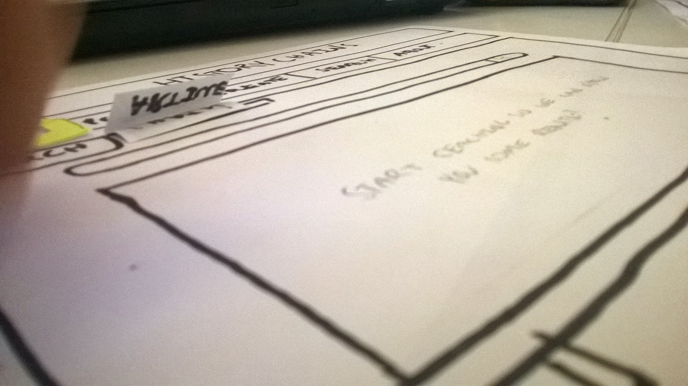

Duties
Design
Reflection
I was taken in by Brisbane start-up company, Hunted Hive as an intern. The company deals with digital solutions and works along side tech/development companies in marketing, web design and SEO. I was able to explore a whole new area of IT, SEO and marketing. The product I was working with was Pocket Earth; an offline map application. My duty was to scope out competitors, research the market and
Design was another aspect of part A I was exceptionally keen on. I wanted to develop the concept so that I would be able to induce user flow and human-computer interaction. It was pivotal for me to be able to create a working design that stands up to the users expectations of the application. To do this, I had to complete extra research. What other applications were out there that utilised Troves data? What applications were out there that performed a task that was similar to ours? Though it wasn't just the application interface that had to be designed, but the target audience and purpose. These two entities are just as important as the application, because without a purpose or without a target audience to utilise the application, then it would be rendered useless. Below are a few mock-ups of the proposed design that I contributed to the team. I was able to complete the wireframes, and the proposal for the target audience and purpose of the application.
When it came down to reflecting on what I had initally designed, I decided it best to refine the project and make a few changes. The first being, after a discussion with one of the other members of the group; to include a social network frame around the application. Making a 'Chain' the object of centrality, we would be able to create an ever evolving community of sources; allowing the user to find information faster, more precisely and in context. In the end, I developed the wireframes and in accordance with sensible design standards, started to develop what the application was to look like. Proceeding through iterative design, I found it hard to settle on a concept that worked for me. It was later discovered through user testing that the whole structure of the website would be changed, but at the time, this was not forseen. I guess that's design for you.
I also found myself designing the database. I wanted to implement a database that would hold the integrity of the data being stored, as well as helping to increase retrival time. I followed the standard database design principles by deliberating a data flow diagram, an entity relationship diagram and furthermore normalizing the relations. I also implemented indexes on titles so that it as possible to search data faster and more efficiently. Throughout the project, database maintenance has been minimal, but it was a part of the implementaiton that I enjoyed greatly.
There was much to reflect at the end of Part A, especially after conducting user testing. During this stage we implemented 'Paper Prototypes' as a way for us to understand how users were to interact with the website. This was a good way for myself to reflect on the success of part A as well as deliberate plans for future implementation. During the reflection stage of Part A, I had a little time to think about what direction the project was heading. What plans for implementation did I not like and what did I think were good ideas? It was about this time that the group got serious about the social aspect of the website; by using a 'History Chain' as the object of centrality, we were able to formalise specific details on how the chain would behave in response to users.
After sitting through half an hour of users testing with the app, I was able to get up and start to move around the room and see how others chose to implement their prototype. Many of them were great, and showed ample functionality. Though I found that some had low fidelity. Again, I saw some great prototypes that helped me reflect on ours, such as our lack of centrality to the application. Many concepts had their app as one page, which was a good idea, whereas ours was more scattered across the whole application. I also found that it was hard for us to express our application through a prototype, with the concept being somewhat hard for the user to understand, we really needed to explain to them what the application did and how they were meant to interact with it before they started using it; a sign that we needed to simplify things.
